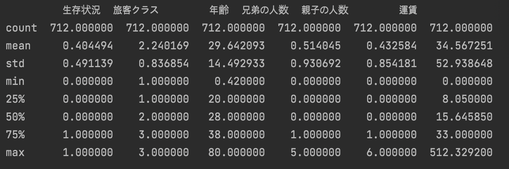
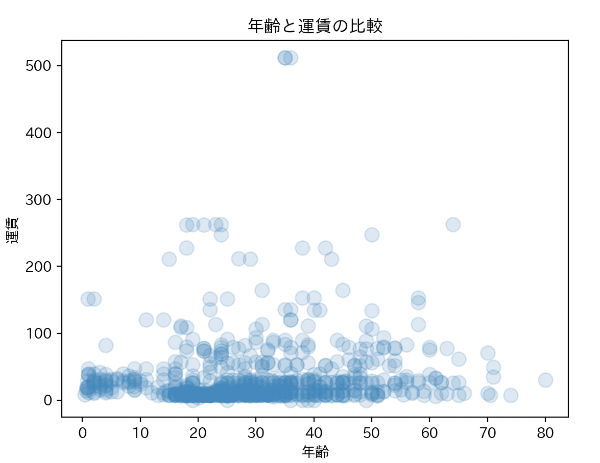
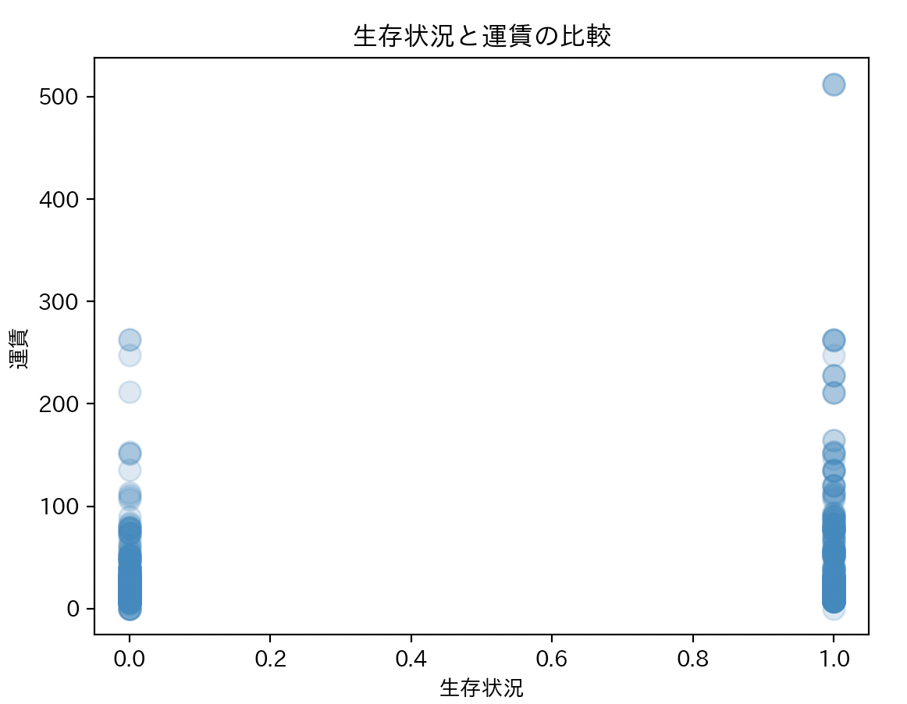
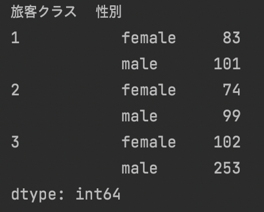
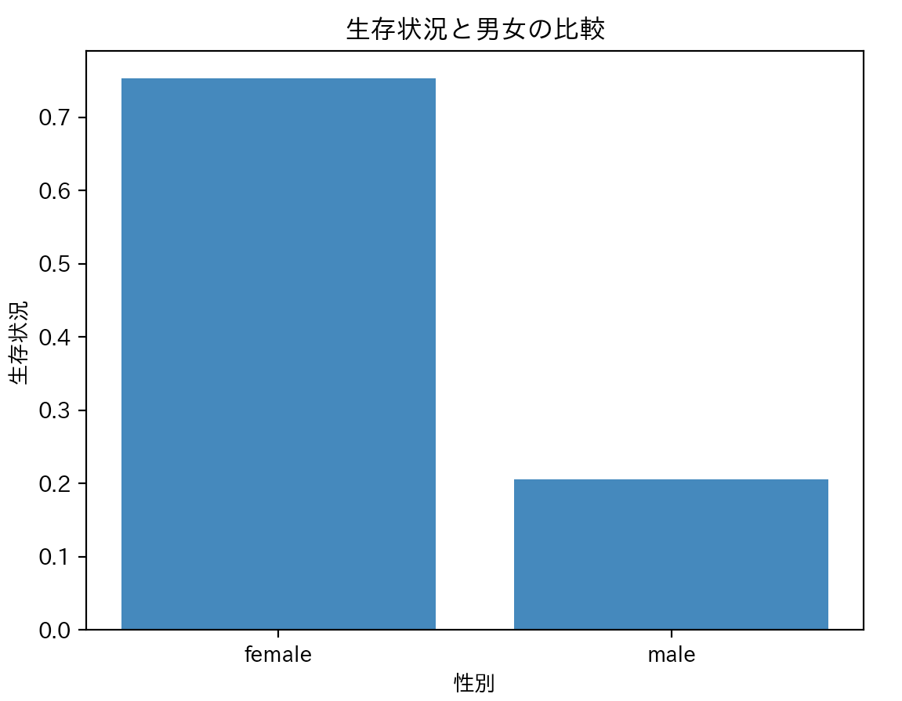
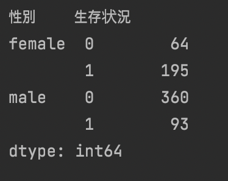

第７回の課題
タイタニックの分析
タイタニックに乗った人のうち、年齢、運賃、旅客クラスを比較しながら生存状況の分析を行った。
年齢の分析
まず、タイタニックに乗った人々の年齢を調べるために、データを分析した。
しかし、タイタニックに乗った人の数は712人なので、全ての人々の年齢を把握するのは難しい。
なので、タイタニックに乗った人々の年齢の平均や最高齢と最年少の人の年齢を分析を行った。

上のようにタイタニックに乗った人たちの年齢の平均は約29歳で、最高齢は80歳、最年少は約４ヶ月の赤ちゃんである。
年齢と運賃の比較
また、年齢と運賃のデータをグラフで比較した。

グラフのように２０代から４０代の中で１００ドル以内で支払い、船に乗った人々の割合が最も多い。
さらに、３０代から４０代の中で、運賃を最も高く支払って船に乗った人がいることが把握できる。
生存状況と運賃の比較
次は運賃と生存状況の分析を行った。

このグラフででわかることは運賃を最も高く支払った人は生存したということである。
さらに、生存できなかった人の中で、１００ドル以上を支払った人はほとんどいないことがわかる。
旅客クラスと性別の比較

また、旅客クラスと性別を比較したが、男女問わず、３クラスに乗った人々が最も多く、２クラスに乗った人が最も少ないことが把握できる。
さらに、１クラスと２クラスに乗った男性の数はあまり差がないが、3に乗った男性の数は1、２クラスに比べ、非常に多いことがわかる。
一方で、女性の数はそれほど変わらないことがわかる。
生存状況と男女の比較

生存状況と男女の比較をしたが、上のグラフのように生存した人は男性より女性の方が極めて多い。このグラフの内容を詳しく分析した。

以下のように、女性は259人の中で、195人が生存したが、男性は453人の中で、わずか93人しか生存できなかった。